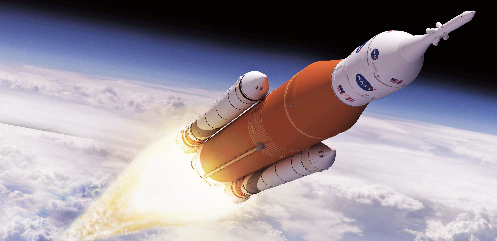

Introduction
Greeting, fellow space explorer! 🌌 Strap in because we're about to embark on an epic journey through the captivating cosmos of space history. Picture this place as your ultimate cosmic lounge—a comfy spot where we'll dive headfirst into the gripping stories, mind-blowing stats, and jaw-dropping missions that have defined humanity's quest for the stars.
First up, let's give a massive intergalactic salute to the stellar minds over at NextSpaceFlight.com. These unsung heroes are the ones behind the scenes, tirelessly cataloging, researching, and delivering the nitty-gritty details that make our space-loving hearts skip a beat. Their dedication? Absolute gold, and it's what makes this journey all the more exhilarating.
Now, as we navigate this cosmic odyssey together, here's the skinny: while I've poured hours, passion, and a sprinkle of stardust into curating this treasure trove, it's essential to approach it with a curious yet discerning eye. Yeah, we're all about celebrating the highs, but let's not shy away from questioning, pondering, and maybe even raising an eyebrow or two at the intricacies, biases, or potential oopsies along the way. After all, it's this critical spirit that fuels our collective exploration and understanding of the vast cosmos.
Ready to take your space game to the next level? Buckle up, my friend! Head over to the GitHub page, your backstage pass to a universe of raw data sets, meticulously crafted .ipynb (Jupyter Notebook) analyses, and a treasure trove of insights waiting to be unearthed. It's like having a cosmic toolbox, empowering you to dive deeper, analyze, question, and maybe even craft your own stellar narratives.
Alright, gear up, keep those celestial vibes strong, and let's dive into the cosmos, armed with curiosity, passion, and an insatiable appetite for discovery. Because, my friend, the universe is not just out there—it's a part of us, waiting to be explored, understood, and cherished. Ready to make some cosmic waves? Let's blast off and never stop exploring! 🚀
General Analysis
The graph vividly portrays the fluctuating trends in the number of space missions over the years. A notable observation is the significant uptick in missions during the Cold War era, peaking at 116 missions in 1917. This surge can be attributed to the intense space race and geopolitical competition between nations striving for supremacy in space exploration during that period.
Following the conclusion of the Cold War, there was a discernible decline in the frequency of space missions, maintaining a relatively consistent pattern until the advent of the 2010s. The resurgence in the number of missions during this decade can be attributed to advancements in technology, renewed interest in space exploration, and ambitious endeavors such as the aspiration to colonize Mars.
The pinnacle of this renewed enthusiasm manifested in 2018, with the number of missions reaching an all-time high of 117. This increase signifies a confluence of factors, including technological innovations, private sector involvement in space exploration, and a shift in global priorities towards fostering exploration and understanding of the vast cosmos.
This Line Graph offers a compelling visualization of the seasonal trends in space mission launches. December emerges as the undisputed frontrunner, witnessing a staggering 430 missions taking flight. Intriguingly, the subsequent month, January, presents a sharp contrast with the lowest tally of 265 missions, marking a noticeable dip in activity.
Observing the ascending trajectory from January to December, a consistent rise in mission launches becomes evident, punctuated by anomalous dips in May and November. One plausible explanation for this cyclic pattern could be rooted in a combination of celestial and terrestrial factors. December's prominence might be influenced by optimal celestial alignments, favorable weather conditions in certain launch sites, or even strategic planning to coincide with global events or anniversaries (such as the New Year's Eve or Christmas).
Conversely, the dips in May and November could be attributed to a myriad of reasons such as unfavorable atmospheric conditions, periodic maintenance or upgrades of launch facilities, or even global events that necessitate a temporary halt or rescheduling of missions. Additionally, geopolitical factors, international collaborations, or budgetary constraints might contribute to the observed fluctuations across these months.
The bar chart meticulously delineates the outcomes of space missions, offering a comprehensive overview of successes juxtaposed against setbacks. Encouragingly, the majority of missions have culminated in success, showcasing a robust total of 3,878 successful endeavors compared to 339 instances of failures or partial failures.
Crunching the numbers reveals a success rate that underscores the resilience and advancements in space exploration. We ascertain a success rate of approximately 91.259%. This high success rate is a testament to the meticulous planning, technological innovations, and expertise that underpin each mission, emphasizing the relentless pursuit of knowledge and exploration beyond Earth's confines.
The accompanying bar chart delineates the dichotomy between active and retired rockets, shedding light on the utilization patterns within the realm of space exploration. A conspicuous observation reveals a substantial disparity, with 3,534 rockets relegated to retirement while a comparatively modest count of 759 rockets remains active in service.
Diving deeper into this discernible difference unveils underlying factors that drive such operational decisions. The considerable count of retired rockets can be attributed to multifaceted considerations, including the escalating costs associated with maintaining aging infrastructure, technological obsolescence, and evolving mission requirements that demand enhanced capabilities. Furthermore, the return on investment (ROI) calculus often favors the development of cutting-edge rockets equipped with advanced features, efficiencies, and safety protocols, thereby rendering older generations less economically viable for continued operations.
Consequently, the strategic focus gravitates towards innovation and progress, compelling the retirement of older rockets in favor of leveraging advancements in design, materials, and propulsion systems. This dynamic approach ensures that missions remain at the forefront of technological prowess, safety standards, and operational efficacy, reflecting a balanced blend of legacy respect and future-forward vision.
The histogram provides a nuanced breakdown of the financial intricacies underpinning space missions, encapsulating the variances and trends in cost distribution over time. While offering a comprehensive snapshot, it's imperative to acknowledge potential data limitations, notably the absence of pricing details for RVSN USSR launches and a temporal gap spanning 1974 to 1982. This caveat underscores the necessity for interpretative caution while navigating the insights presented.
Notwithstanding these limitations, the chart elucidates a fluctuating cost landscape punctuated by notable peaks and troughs. A discernible correlation emerges between the escalation in the number of space missions and corresponding cost dynamics. For instance, the zenith of expenditure was witnessed in 1989, with costs soaring to approximately 5.965 million USD, whereas 2006 marked a nadir at 1.436 million USD.
Delving into potential rationales for these cost fluctuations, several factors warrant consideration. The 1989 peak might be attributed to ambitious endeavors, technological complexities, geopolitical dynamics, or even specific mission objectives necessitating substantial investments. Conversely, the downturn in 2006 could reflect advancements in cost-effective technologies, streamlined operational efficiencies, strategic collaborations, or recalibrated mission scopes prioritizing fiscal prudence without compromising scientific objectives.
The vibrant histogram meticulously illustrates the trajectory of mission outcomes over time, categorizing them into successes, failures, partial failures, and pre-launch failures. A discerning eye can readily discern a promising trend: the frequency of failures has steadily declined over the years, signifying advancements and refinements in space mission execution.
To underscore this transformative journey, let's consider the data from 1958 to 1962, a period characterized by a precarious balance between successes and failures. During these formative years, the tally stood at 65 successes juxtaposed against 59 failures and 8 partial failures, reflecting a relatively volatile landscape with a discernible risk profile.
However, as we traverse through subsequent decades, a remarkable shift becomes palpable. The percentage of failures progressively dwindled to converge around an impressive 8% mark, underscoring enhanced operational proficiency, technological innovations, rigorous quality controls, and accumulated expertise garnered from previous missions.
Fast-forwarding to the contemporary era, the years 2018 to 2020 epitomize this transformative evolution. The data encapsulates an impressive record of 218 successes juxtaposed against a minimal count of 7 failures and 4 partial failures, reflecting a paradigm shift in mission reliability and efficacy.
This upward trajectory in mission success rates can be predominantly attributed to advancements in technology, robust risk mitigation strategies, meticulous planning, enhanced collaboration among global space agencies, iterative learning from past failures, and a relentless pursuit of excellence in every facet of space mission planning and execution.
Countries Analysis
This choropleth map delineates the geographical distribution of space missions across nations, offering insights into the pivotal players and their respective contributions to space exploration. A cursory glance reveals a dual-centric landscape dominated by prominent players in both the Western and Eastern hemispheres.
At the forefront, Russia emerges as a frontrunner with an impressive tally of 1,398 missions, closely trailed by the United States with 1,385 missions, underscoring their seminal roles and enduring legacies in shaping space exploration narratives. Delving deeper into the Western hemisphere, a select triumvirate comprising the United States, Japan, and France collectively contribute 1,814 missions, reinforcing their strategic prominence and collaborative endeavors in advancing space exploration frontiers.
Conversely, the Eastern hemisphere presents a different landscape characterized by a triumvirate of formidable spacefaring nations: Russia, Kazakhstan, and China, amassing a cumulative count of 2,367 missions. This concentration underscores their pivotal roles, strategic alliances, and concerted efforts in fortifying their respective space programs, driving technological innovations, and expanding exploration horizons.
While I had aspirations to create a Choropleth map detailing the expenditures on space missions across various nations, a significant hindrance emerged due to the absence of comprehensive financial data from the USSR. Unfortunately, the USSR's decision not to archive or disclose any financial records pertaining to its space missions impedes the realization of this endeavor, leaving a notable void in our understanding of global space expenditure trends.
The choropleth map intriguingly delineates the failure rates of space launches across nations, revealing distinct patterns. Notably, the U.S. experienced a higher failure rate, with 132 failed missions out of 1,385 launches, compared to Russia's 63 failures out of 1,398 launches. This disparity might be attributed to a combination of factors, including differing approaches to risk management and mission execution strategies.
For instance, historical analyses suggest that the U.S. space program often prioritized ambitious missions with intricate objectives, thereby inherently elevating the risk profile. In contrast, Russia, while undertaking complex missions, might have employed a more incremental approach, emphasizing iterative testing and validation phases to mitigate potential failures.
Similarly, countries like France and Russia, boasting approximately a 4% failure rate, may have adopted stringent quality assurance protocols, rigorous testing regimes, and meticulous mission planning, fostering higher success rates. Conversely, nations like the U.S, Kazakhstan, and Japan, hovering around a 10% failure rate, might grapple with inherent complexities, resource constraints, or strategic imperatives that influence their mission outcomes. I am not expert anyways.
The interactive sunburst visualization offers a granular perspective on the success rates attributed to various organizations within distinct countries' space programs. This detailed analysis reveals intriguing disparities, prompting us to delve into the underlying factors shaping these outcomes.
At the forefront, General Dynamics emerges with a notably subdued success rate, drawing attention to potential operational challenges, resource constraints, or strategic misalignments within its operational framework. Concurrently, the U.S. Air Force follows suit, raising questions about the interplay between military objectives, technological complexities, and mission execution protocols within its space-centric initiatives.
Contrarily, entities such as SpaceX, ULA, and Boeing carve out a commendable track record marked by minimal failures. This success can be attributed to their relentless pursuit of innovation, robust quality assurance protocols, adaptive strategies, and investment in cutting-edge technologies. Their exemplary performance underscores the significance of agile methodologies, rigorous testing regimes, and a collaborative ethos in fostering mission success amidst the evolving challenges of space exploration.
Shifting focus to the RVSN USSR's endeavors, a discernible disparity emerges between its performance in Kazakhstan and Russia. The elevated failure rate in Kazakhstan unveils a mosaic of potential contributing factors, encompassing logistical complexities, environmental variables, infrastructural nuances, or regulatory landscapes unique to the region. This observation underscores the intricate dynamics organizations navigate when transposing operational blueprints across diverse geographical, geopolitical, and socio-cultural terrains, necessitating adaptive strategies, localized insights, and robust risk mitigation frameworks.
Organisation Analysis
Shifting our attention to the spatial organization landscape, our pie chart provides a succinct representation of the space missions launched by the top 10 organizations, elucidating intriguing dynamics and dominance patterns within the global space exploration arena.
A salient observation unfolds as the RVSN USSR commands a formidable presence, accounting for over half of the total space missions launched. This dominance underscores the pivotal role and historical significance of the organization in propelling space exploration milestones, reflecting its enduring legacy, technological advancements, and strategic imperatives that shaped cosmic endeavors during its operational tenure.
Concurrently, the U.S. landscape unfolds as a tapestry of diverse entities, collectively contributing to approximately 30% of the total missions. This distributed ecosystem highlights the collaborative ethos, innovative prowess, and multifaceted strategic engagements characterizing the U.S. space sector, emphasizing the synergistic contributions of various organizations in advancing cosmic frontiers, fostering technological innovations, and pioneering breakthroughs in space exploration domains.
Rounding out the panorama, entities such as CASC and Arianespace delineate their niche within the global space exploration ecosystem, representing distinct operational philosophies, strategic objectives, and technological trajectories that collectively enrich the tapestry of cosmic endeavors, fostering collaboration, innovation, and shared aspirations in unraveling the mysteries of the cosmos.
The embedded bar chart sheds light on the top 10 organizations that have allocated the most significant financial resources to space missions, excluding the RVSN USSR due to data constraints. A clear frontrunner emerges in NASA, with an impressive expenditure surpassing 76 billion USD. Following closely are Arianespace and ULA, each investing approximately 15.5 billion USD. In contrast, VKS RF occupies the final position with a comparatively modest expenditure of 1.5 billion USD.
The reason behind NASA's substantial financial commitment is leading position that could be attributed to its pivotal role as a frontrunner in Western space exploration endeavors. Historically, NASA's funding, predominantly sourced from governmental allocations, underscores its strategic importance and commitment to maintaining technological supremacy, fostering innovation, and navigating geopolitical dynamics, especially during the era marked by intense competition with the Soviet space program. Thus, NASA's robust financial backing exemplifies the intertwined relationship between space exploration, national priorities, technological advancements, and geopolitical imperatives shaping the cosmic frontier's trajectory.
The presented bar chart offers insights into the expenditures of the top 10 organizations per individual space mission. Notably, NASA maintains its dominant position, followed by Boeing, Arianespace, and ULA. Interestingly, the financial dynamics reaffirm the supremacy of the U.S., Europe, and Japan, often considered the stalwarts of space exploration.
Examining the underlying factors, the U.S.'s robust financial commitment can be attributed to its advanced economic landscape, technological prowess, strategic alliances, and historical precedence in space exploration. The country's sustained investments in fostering innovation, research, and development across aerospace domains underscore its unwavering commitment to maintaining leadership in the cosmic frontier, capitalizing on synergies between governmental initiatives, private sector collaborations, and academic partnerships.
In contrast, emerging spacefaring nations such as China, India, and Russia grapple with economic constraints, evolving geopolitical dynamics, technological challenges, and strategic imperatives that influence their financial allocations and mission portfolios. While these nations exhibit commendable progress, their investments reflect a balancing act between fostering domestic capabilities, international collaborations, and aligning space exploration endeavors with broader national aspirations, technological ambitions, and geopolitical alignments in navigating the complexities of the cosmic landscape.
Our concluding line chart serves as a poignant chronicle, delineating the intricate trajectory of space missions launched by the top 10 organizations across time. At the forefront of this narrative stands the RVSN USSR, a historical colossus that epitomized space exploration prowess. Witnessing its pinnacle in 1976 with an astonishing 93 missions, the organization's trajectory was marred by setbacks, experiencing significant declines in 1979 and ultimately dissolving with the culmination of the Cold War, symbolizing the end of an era and geopolitical dynamics that reshaped cosmic ambitions.
Delving deeper, the graph elucidates the transformative shifts in the global space exploration landscape, heralding the rise of emerging superpowers like China's CASC, which showcased formidable prominence in 2016. Concurrently, the resurgence of Russia's VKS RF underscores the nation's enduring commitment to space endeavors, navigating geopolitical tides and technological innovations to reclaim its position on the cosmic stage.
Transitioning to the U.S, the chart unfurls a tapestry of diversity, reflecting the nation's multifaceted space ecosystem characterized by a confluence of private enterprises, public sector initiatives, and collaborative endeavors. Intriguingly, pivotal milestones punctuate this narrative, with the U.S. Air Force surging with 40 missions in 1962 and General Dynamics peaking at 33 missions in 1966, exemplifying moments of heightened activity, innovation, and strategic imperatives that shaped the nation's space exploration trajectory.
Meanwhile, European stalwart Arianespace occupies a distinctive position, navigating the complexities of space exploration with relative stability, reflecting a nuanced approach, collaborative alliances, and strategic engagements amidst evolving geopolitical, technological, and economic landscapes.
Broadening the lens, the chart resonates with humanity's unwavering pursuit of cosmic exploration, encapsulating our innate curiosity, technological advancements, collaborative endeavors, and shared aspirations to transcend boundaries, foster innovation, and unravel the enigmatic cosmos, underscoring a timeless odyssey that transcends epochs, civilizations, and frontiers.
Conclusion
Hey, fellow human! what a ride we've had! Imagine hopping aboard a rocket ship and zooming through the annals of space history, witnessing the epic battles, breakthroughs, and "whoa, did that just happen?" moments. Yep, that's pretty much what we've been up to.
From the legendary days of the RVSN USSR, where they were like the rockstars of space with missions popping left and right, to their unexpected curtain call by the end of the Cold War talk about a plot twist! But, hey, the space saga didn't end there. Enter new heroes on the block like China's CASC, bringing their A-game and making us all sit up and take notice. And let's not forget the crowd favorites like SpaceX, ULA, and our U.S. pals, who've been laying down some serious cosmic tracks over the years.
Now, if there's one thing I've learned on this mind-blowing adventure, it's this: the universe isn't just about stars, planets, and mind-boggling black holes. Nah, it's about the spirit of exploration, that insatiable curiosity that pushes us to dream bigger, reach higher, and yeah, sometimes build rockets just for the fun of it (okay, maybe with a bit more purpose).
So, here's the dealio: Massive high-fives and virtual fist bumps for sticking around and geeking out with me. But, my friend, our cosmic journey is far from over. There's a universe of knowledge out there, waiting to be explored, discovered, and maybe even Instagrammed (because, why not?).
So, promise me this: keep that spark alive, that hunger for knowledge burning bright. Dive into books, fire up those documentaries, or heck, build your own mini rocket in the backyard (safely, of course). Whatever you do, never stop learning, exploring, and pushing those boundaries. Because the cosmos? It's calling, and who are we to keep it waiting?
Until our next cosmic rendezvous, keep your telescopes focused, your curiosity peaked, and remember: the universe isn't just out there; it's within you. Stay stellar, my friend! 🚀